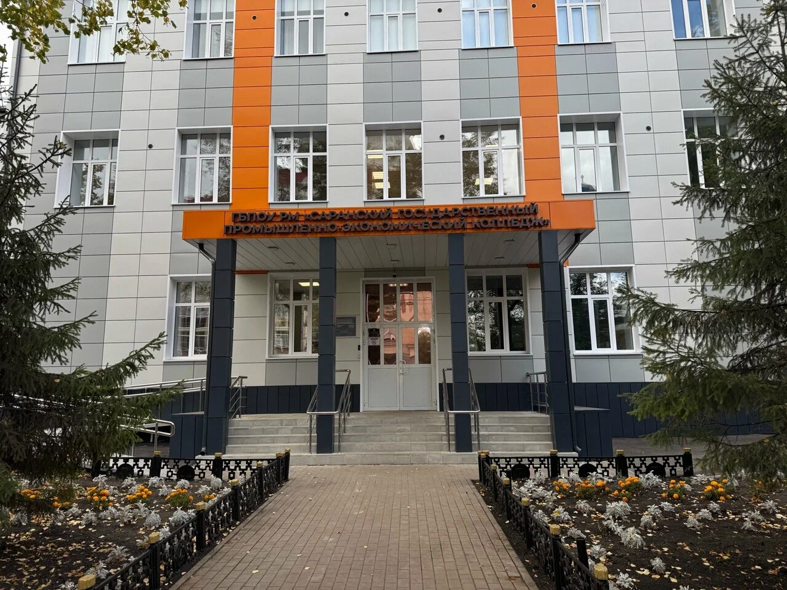

Завгородний Игорь Сергеевич
16 лет · Саранск, Россия · 1 курс СГПЭК
👤 Кто я
Меня зовут Игорь, мне 16 лет. Живу в Саранске, здесь родился и вырос. В два с половиной года пошёл в детский сад №79 — обычный ребёнок, любил собирать конструктор, смотреть, как работают игрушки, наблюдать за техникой. Наверное, именно тогда начало закладываться "технарское" зерно.
Потом была школа №35. Учился нормально, без подвигов. С математикой особо не дружил, а вот физика, химия, география и информатика — это прям моё. Там было интересно разбираться, копать, искать закономерности. С литературой, русским, историей и обществом было тяжеловато — зубрить и писать сочинения совсем не заходило.
Играть в игры начал ещё в началке. Сначала просто баловался, а потом захотелось понять, как это всё работает изнутри. Потихоньку втянулся в тему: начал разбираться в железе, настройках, читать форумы, смотреть обзоры. К концу школы уже сам мог собрать компьютер, переустановить систему, настроить софт.
Сейчас учусь на первом курсе в СГПЭК, специальность — системное администрирование. Программа пока больше школьная, так что большую часть знаний вытягиваю сам. Занимаюсь Python, написал несколько телеграм-ботов, звуковой скрипт, голосового ассистента. Сейчас делаю индивидуальный проект — простой сканер IT-инфраструктуры, чисто для колледжа, чтобы разобраться в теме и показать, что могу.
Если говорить коротко — обычный парень, который любит технику, не боится пробовать новое и готов ошибаться, чтобы потом сделать лучше. Часто ленюсь, иногда выгораю, но если тема заходит — могу сидеть часами, пока не разберусь до конца.

🎓 Учёба
ГБПОУ РМ «Саранский государственный промышленно-экономический колледж»
Адрес: Республика Мордовия, г. Саранск, пр. Ленина, 24.
Специальность: Системное администрирование (1 курс).
💻 Что делаю по IT
Изучаю и немного пишу на Python. Сделал двух телеграм-ботов и пару скриптов:
- Текстовая RPG-игра — бот с локациями, монстрами, инвентарём.
- GeoGuessr-бот — угадывание стран по фото, с жизнями и магазином.
- Скрипт на хлопки — скрипт, который выполняет заготовленное действие по хлопкам (например, запуск игры).
- Голосовой ассистент на основе нейросети Гигачат — распознаёт речь и выполняет задачи.
- Сканер IT-инфраструктуры — учебный проект для демонстрации базового сканирования сети. Пока разбираюсь, как он устроен.
🚀 Чем увлекаюсь
- Компьютерные игры — в основном с сюжетом, не только онлайн.
- Симрейсинг — гонки на симуляторах.
- Формула 1 — с детсва смотрю гонки.
- Велоспорт — катаюсь по лесным дорогам или асфальту.
- Космос — люблю читать про космос.
- Фильмы и музыка — подробно на странице «Интересы».
Раньше занимался каратэ, но уже 2 года не хожу.
🎯 Планы
Доделать проект по колледжу, продолжать изучать Python, не забивать на учёбу.
📅 Как обычно выглядит моя неделя
Приблизительное расписание, иногда меняется
© 2026 · Завгородний Игорь